Panel, wordmark, favicon

mark-animated.svg
wordmark-light.svg
wordmark-dark.svg
favicon.svg · 64 / 32 / 16
Warm neutrals, one accent
Less noise.
More signal.
Body text is set in Calibri: rational but not cold, so long explanations stay easy to read. Titles use Arial Bold with tight tracking; labels use Courier New in spaced capitals.
Micro-label · Courier New · uppercase · spaced
Forecast Studio, restyled
Forecast · vendite · 90 days
| Month | Median | 80% interval |
|---|---|---|
| December | 4 812 | 4 120 – 5 530 |
| January | 3 960 | 3 210 – 4 780 |